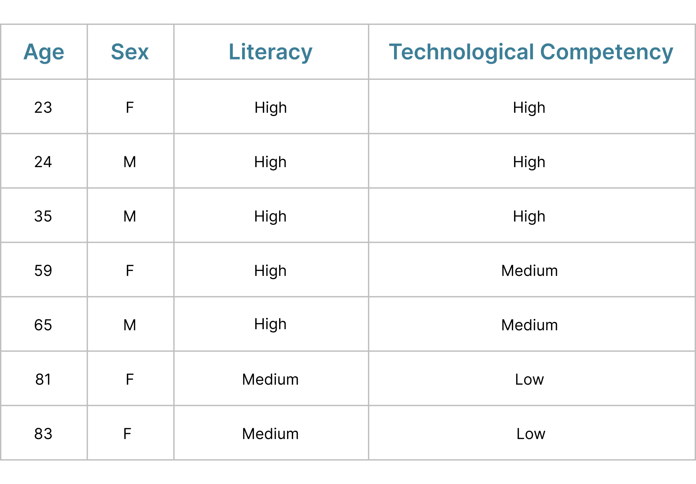

Enhancing health literacy using artificial intelligence
To challenge myself and test my critical thinking skills, I took part in a UX design makeathon. I decided to take on the challenge sponsored by CommunicateHealth. As the icing on a cake, my team ended up winning first place!

ROLE
UX ResearcherUX Designer
TEAM
2 UX ResearchersEach also a UX Designer
CLIENT
CommunicateHealthOUTCOME
Affinity DiagramInteractive working prototype
TIMELINE
31 Mar-1 Apr 2023PROBLEM
AI to support individuals with low health literacy
How might we use artificial intelligence to support people with limited health literacy to better manage their health? I was trying to enhance the health literacy of individuals with low health literacy and how they access their health information using artificial intelligence.
PROCESS
Design Thinking
EMPATHIZE
Literature Review
I performed literature review to better understand health literacy, artificial intelligence, and trust in care providers.
TRUST IN AI
Opening up about the process builds trust between user and system.
Opening up about the process builds trust between user and system.
AI IN MEDICINE
While helping with health literacy, it should only supplement and suggest, but not make any decisions by itself.
While helping with health literacy, it should only supplement and suggest, but not make any decisions by itself.
HEALTH LITERACY
General improvement of experience for people with low literacy can lead to improved health literacy.
General improvement of experience for people with low literacy can lead to improved health literacy.
TRUST & HEALTH LITERACY
Help develop critical appraisal, simplifying patient-directed materials, teaching clinicians to use plain language.
Help develop critical appraisal, simplifying patient-directed materials, teaching clinicians to use plain language.
User Demographics
To further validate my data and designs, I conducted interviews with a varied audience. Even though they rank on the higher side of literacy level, that does not translate to a higher health literacy level.

Interview Structure
I touched on the following points during interviews:
1. Introduction and overview of the topic
2. General questions about health literacy
3. Biggest pain points around acquiring and navigating health information
4. Suggestions and ideas to improve their health information experience
DEFINE
Affinity Diagram
I created an affinity diagram based on the participants' responses.


 2022
2022